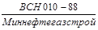

|
Министерство _______________________ Форма 2.28 Объединение, трест ___________________ Основание: (Часть П) СМУ, СУ, ПМК, КТП _________________ Строительство _____________________ Участок _____________________________ __________________________________ Объект ___________________________ РАЗРЕШЕНИЕ №______ на укладку трубопровода через водную преграду протаскиванием на км/ПК ___________________ от «____» ___________ 200__ г. Разрешается произвести протаскивание ________________________________ нитки перехода через _____________________________________________________________ (наименование водной преграды) от км/ПК _________________ до км/ПК ______________ общей протяженностью ___________________________ м. зафутерованного и забалластированного согласно проекту по чертежу № ______________________. Повреждений изоляции не обнаружено. Сварочно-монтажные, изоляционные, земляные работы по разработке траншеи выполнены в полном объеме и в соответствии с проектом, действующими нормами и правилами, проконтролированы, о чем сделаны соответствующие записи в журналах работ и поэтапной приемки, и приняты. Ведомость промеров на момент подписания разрешения прилагается. Исполнительная документация проверена и прилагается в полном объеме. Представитель генподрядчика ____________________________ _______________ ________ (организация, должность, фамилия, инициалы) (подпись) (дата) Представитель СРН УПТР ____________________________ _______________ ________ (организация, должность, фамилия, инициалы) (подпись) (дата) Представитель технадзора заказчика ____________________________ _______________ ________ (организация, должность, фамилия, инициалы) (подпись) (дата) Приложение 1 к формам № 2.28 и № 3.7 ВЕДОМОСТЬ проектных и фактических отметок дна траншеи по оси ___________________________________ нитки перехода через_______________________ трубопроводы ____________________________ от км/ПК _________________________________ (начало промеров) до км/ПК _________________________________ (конец промеров) Отметки горизонта воды, м: а) на начало промеров ____________________ б) на конец промеров _____________________ Дата промеров _____________________________
Представитель субподрядчика- исполнитель ПТР ____________________________ _______________ ________ (организация, должность, фамилия, инициалы) (подпись) (дата) Представитель генподрядчика ____________________________ _______________ ________ (организация, должность, фамилия, инициалы) (подпись) (дата) Представитель СРН УПТР ____________________________ _______________ ________ (организация, должность, фамилия, инициалы) (подпись) (дата) Представитель технадзора заказчика ____________________________ _______________ ________ (организация, должность, фамилия, инициалы) (подпись) (дата) |
||||||||||||||
|
Министерство _______________________ Форма 2.29 Объединение, трест ___________________ Основание: (Часть П) СМУ, СУ, ПМК, КТП _________________ Строительство ____________________ Участок _____________________________ __________________________________ Объект ___________________________ АКТ №_____ на проверку укладки трубопровода в створе перехода через водную преграду от «____»________ 200___г. Составлен представителями: субподрядчика-исполнителя ПТР __________________ ___________________________________________________________________________ (должность, организация, фамилия, инициалы) генподрядчика ______________________________________________________________ (должность, организация, фамилия, инициалы) _________________. СРН УПТР_______________________________________________ (должность, организация, фамилия, инициалы) ___________________________________________________________________________ технадзора заказчика ________________________________________________________ (должность, организация, фамилия, инициалы) в том, что проведенными контрольными линейными, угловыми измерениями и промерами уложенного подводного трубопровода _____________ нитки перехода через ___________________________________________ (наименование водной преграды) ___________________________________________________________________________ на участке от км/КП __________________ до км/ПК ______________________________ общей протяженностью ________________________________________, м установлено, что укладка произведена согласно проекту по чертежу № _________________________ ___________________ и имеющихся согласований _______________________________ ___________________________________________________________________________ (указать существо согласовании, дату, лицо, организацию) ___________________________________________________________________________ в полном соответствии с действующими нормами и правилами ____________________ ___________________________________________________________________________ (указать шифр и полное название норм, правила) и принята. Ведомость отметок трубопровода, уложенного в створе перехода, прилагается. Представитель субподрядчика- исполнитель ПТР ____________________________ _______________ _________ (организация, должность, фамилия, инициалы) (подпись) (дата) Представитель генподрядчика ____________________________ _______________ _________ (организация, должность, фамилия, инициалы) (подпись) (дата) Представитель СРН УПТР ____________________________ _______________ _________ (организация, должность, фамилия, инициалы) (подпись) (дата) Представитель технадзора заказчика ____________________________ _______________ _________ (организация, должность, фамилия, инициалы) (подпись) (дата) Приложение к форме № 2.29 ВЕДОМОСТЬ отметок заложения трубопровода диаметром _________________ мм по __________ нитке перехода через _________________________ от км/ПК ______________________________ (начало промеров) ДО км/ПК _____________________________ (конец промеров) Отметки горизонта воды, м: а) на начало промеров _______________ о) на конец промеров ________________ Дата промеров ________________________ |
|
№ п/п |
Номера пикетов и полосовых точек участка |
Расстояние между точками промеров, м |
Фактическая глубина заложения трубы в, траншею (по верхней образующей, трубы), м |
Отметка верхней образующей трубы, м |
Проектные отметки по верхней образующей трубы, м |
Примечание |
|
1 |
2 |
3 |
4 |
5 |
6 |
7 |
|
Представитель субподрядчика- исполнитель ПТР ____________________________ _______________ ________ (организация, должность, фамилия, инициалы) (подпись) (дата) Представитель генподрядчика ____________________________ _______________ ________ (организация, должность, фамилия, инициалы) (подпись) (дата) Представитель СРН УПТР _________________________ _______________ ________ (организация, должность, фамилия, инициалы) (подпись) (дата) Представитель технадзора заказчика ____________________________ _______________ ________ (организация, должность, фамилия, инициалы) (подпись) (дата) |
|
Министерство _______________________ Форма 2.30 Объединение, трест ___________________ Основание: (Часть П) СМУ, СУ, ПМК, КТП _________________ Строительство ____________________ Участок _____________________________ _________________________________ Объект __________________________ АКТ №_______ на берегоукрепительные и дноукрепительные работы от «____» ______________ 200___ г. Составлен представителями: субподрядной организации, выполняющей ПТР __________________________________________________________________________ (должность, организация, фамилия, инициалы) генподрядчика _____________________________________________________________ (должность, организация, фамилия, инициалы) геодезической службы генподрядчика _________________________________________ (должность, организация, фамилия, инициалы) ______________ СРН УПТР __________________________________________________ (должность, организация, фамилия, инициалы) ______________. технадзора заказчика _________________________________________ (должность, организация, фамилия, инициалы) ______________________________________________________ в том, что проведенной проверкой берегоукрепительных и дноукрепительных работ установлено: 1. На левом берегу _______________________________________________________ (указывается конструкция укрепления в надводном и подводном участке перехода) __________________________________________________________________________ 2. На правом берегу ______________________________________________________ __________________________________________________________________________ 3. По дну _______________________________________________________________ Берегоукрепительные и дноукрепительные работы выполнены в соответствии с проектов по чертежу № __________________ и приняты. Представитель субподрядчика- исполнитель ПТР ____________________________ _______________ ________ (организация, должность, фамилия, инициалы) (подпись) (дата) Представитель генподрядчика ____________________________ _______________ ________ (организация, должность, фамилия, инициалы) (подпись) (дата) Представитель СРН УПТР ____________________________ _______________ ________ (организация, должность, фамилия, инициалы) (подпись) (дата) Представитель технадзора заказчика ____________________________ _______________ ________ (организация, должность, фамилия, инициалы) (подпись) (дата) |
|
Министерство _______________________ Форма 2.31 Объединение, трест ___________________ Основание: (Часть П) СМУ, СУ, ПМК, КТП _________________ Строительство ____________________ Участок _____________________________ __________________________________ Объект ___________________________ АКТ № _____ промежуточной приемки ________ нитки перехода трубопровода через водную преграду от «___» ___________ 200__ г. Составлен комиссией, назначенной приказом ________________________________ (наименование организации) _______________________________ от «____» _____________ 200__ г. № ___________ в составе: Председатель комиссии ___________________________________________________ (должность, организация, фамилия, инициалы) Члены комиссии _________________________________________________________ (должность, организация, фамилия, инициалы) __________________________________________________________ __________________________________________________________ __________________________________________________________ в том, что работы по сооружению перехода через ________________________________ (наименование водной преграды) ________________________________________________ на участке от км/ПК ________ до км/ПК ________________________ общей протяженностью __________________ м выполнены вместе с прилегающими участками в полном объеме и в соответствии с действующими нормами и правилами _________________________________________ __________________________________________________________________________ проектом по чертежу № ___________________ с учетом имеющихся согласований __________________________________________________________________________ (указать все имевшие место отступления, от какого документа, по какой причине __________________________________________________________________________ они произошли, кем и когда санкционированы) __________________________________________________________________________ __________________________________________________________________________ __________________________________________________________________________ После укладки трубопровода на дно траншеи в русловой и пойменной части комиссией выполнены контрольные линейные и угловые измерения в натуре на соответствие проектного его заложения. После завершения строительства выполнены дно- и берегоукрепительные работы и приняты по акту № ________________________ от «____» _______________ 200__ г. Исполнительная документация проверена и прилагается в полном объеме, в том числе приложения к формам 2.28 и 2.29. (ведомости промеров глубин и заложения трубопровода, исполнительный профиль) и форма № 2.27. Законченный строительством переход принят. М. П. Председатель комиссии _________________________ ______________ ________ (фамилия, инициалы) (подпись) (дата) Члены комиссии: _________________________ ______________ ________ (фамилия, инициалы) (подпись) (дата) _________________________ ______________ ________ (фамилия, инициалы) (подпись) (дата) _________________________ ______________ ________ (фамилия, инициалы) (подпись) (дата) _________________________ ______________ ________ (фамилия, инициалы) (подпись) (дата) |
|
Министерство _______________________ Форма 2.32 Объединение, трест ___________________ Основание: (Часть П) СМУ, СУ, ПМК, КТП _________________ Строительство ____________________ Участок _____________________________ __________________________________ Объект ___________________________ АКТ №__________ на скрытые работы при сооружении заземления (рабочего, защитного, линейно-защитного) от «____» ___________ 200___ г. Составлен представителями: заказчика ______________________________________ (должность, организация, фамилия, инициалы) _______________________________________________. эксплуатирующей организации __________________________________________________________________________, (должность, организация, фамилия, инициалы) монтажной организации ____________________________________________________ (должность, организация, фамилия, инициалы) _____________________ в том, что ___________________________________________ (тип заземления, заземление ________________________________________________________________ наименование сооружения ЭХЗ) на участие м/ПК ____________________________________________________________ провода выполнено в соответствии с проектом, чертеж № ________________________, разработанным _____________________________________________________________ (наименование проектной организации) ______________________ «____» _____________ 200___ г., все соединения выполнены способом ___________________________________________________, и заизолированы ____________________________. Отступления от проекта ___________________________________________________ ___________________________________________________________________________ согласованы с ______________________________________________________________ (должность лица, согласовавшего отступление, ___________________________________________________________________________ организация, фамилия, инициалы) «____» ________________ 200__ г. Заключение по результатам проверки: Выполненные заземления могут быть закрыты ________________________________ ___________________________________________________________________________ К акту прилагаются план-схема расположения заземления и результаты измерений сопротивления растеканию тока заземления. Представитель заказчика _____________________ _______________ ________ (фамилия, инициалы) (подпись) (дата) Представитель эксплуатирующей организации _______________________ _______________ ________ (фамилия, инициалы) (подпись) (дата) Представитель монтажной организации _______________________ _______________ ________ (фамилия, инициалы) (подпись) (дата) Приложение к акту №___________ от «____»_________________200__г. ХАРАКТЕРИСТИКА ЗАЗЕМЛИТЕЛЕЙ |
|
№ п/п |
Участки заземления |
Параметры заземления |
|||||||||
|
стержневого |
протяжного |
||||||||||
|
материал |
Профиль |
Размер, мм |
Количество, шт. |
Глубина заложения, м |
Материал |
Профиль |
Размер, мм |
Количество, шт. |
Глубина заложения, м |
||
|
Работник монтажной организации _____________________________ _______________ _________ (должность, организация, фамилия, инициалы) (подпись) (дата.) |
|||||||||||||||||||||||||||||||||||||
|
Министерство _______________________ Форма 2.33 Объединение, трест ___________________ Основание: (Часть П) СМУ, СУ. ПМК. КТП _________________ Строительство ____________________ Участок _____________________________ __________________________________ Объект ___________________________ АКТ №_______ на скрытые работы при сооружении анодного заземления от «____» ___________ 200__ г. Составлен представителями: заказчика ______________________________________ (должность, организация, фамилия, инициалы) ______________________________________________. эксплуатационной организации ___________________________________________________________________________ (должность, организация, фамилия, инициалы) монтажной организации ____________________________________________________ (должность, организация, фамилия, инициалы) _______________________________________________ в том, что анодное заземление ________________________________________________ на участке км/ПК __________ (наименование сооружения ЭХЗ) ___________________________________________ провода выполнено в соответствии с проектом, чертеж № ________________________________________,.разработанного ________________________________________ «_____» __________________ 200__ г., (наименование проектной организации) все соединения выполнены способом _________________________________________ и заизолированы _______________________________. Отступления от проекта __________________________________________________ согласованы с _____________________________________________________________ (должность лица, согласовавшего отступление, __________________________________________________________________________ организация, фамилия, инициалы) «____» ___________________ 200___ г. Характеристика анодного заземления: Сопротивлений растеканию тока анодного заземления составляет ______ Ом при удельном электрическом сопротивлении грунта ______ Ом. Параметры анодного заземления приведены в приложении к настоящему акту. Заключение по результатам проверки: _______________________________________ ___________________________________________________________________________ ___________________________________________________________________________ К акту прилагаются план-схема расположения анодного заземления и результаты измерений сопротивления растеканию тока заземления. Представитель заказчика _____________________ _______________ ________ (фамилия, инициалы) (подпись) (дата.) Представитель эксплуатирующей организации _______________________ _______________ ________ (фамилия, инициалы) (подпись) (дата.) Представитель монтажной организации _______________________ _______________ ________ (фамилия, инициалы) (подпись) (дата.) Приложение к акту №___________ от «____»_________________200__г. ПАРАМЕТРЫ АНОДНОГО ЗАЗЕМЛЕНИЯ
Работник монтажной организации _____________________________ _______________ ________ (должность, организация, фамилия, инициалы) (подпись) (дата.) |
|||||||||||||||||||||||||||||||||||||
|
Министерство _______________________ Форма 2.34 Объединение, трест ___________________ Основание: (Часть П) СМУ, СУ, ПМК, КТП _________________ Строительство ____________________ Участок _____________________________ __________________________________ Объект ___________________________ АКТ №_______ на скрытые работы при сооружении протекторной установки от «____» ___________ 200__ г. Составлен представителями: монтажной организации __________________________ (должность, организация, фамилия, инициалы) _______________________________________________. эксплуатационной организации ___________________________________________________________________________ (должность, организация, фамилия, инициалы) заказчика __________________________________________________________________ (должность, организация, фамилия, инициалы) _____________________________________________________ в том, что протекторная установка выполнена на участке км/ПК _________________________________провода в соответствии с проектом электрооборудования по чертежу № ___________________________ разработанным _________________________________ ________________________________________ «_____» ___________________ 200__ г., (наименование проектной организации) все соединения выполнены способом _________________________________________. Отступления от проекта ___________________________________________________ согласованы с ______________________________________________________________ (должность лица, согласовавшего отступление, __________________________________________________________________________ организация, фамилия, инициалы) «____» ___________________ 200___ г. Характеристика протекторной установки
Заключение по результатам проверки: _______________________________________ ___________________________________________________________________________ ___________________________________________________________________________ К акту прилагаются план-схема расположения протекторной установки и результаты измерений сопротивления цепи протектор-трубопровод, удельного сопротивления грунта, токоотдачи и разности потенциалов труба-земля. Представитель заказчика _____________________ _______________ _________ (фамилия, инициалы) (подпись) (дата.) Представитель эксплуатирующей организации _______________________ _______________ _________ (фамилия, инициалы) (подпись) (дата.) Представитель монтажной организации _______________________ _______________ _________ (фамилия, инициалы) (подпись) (дата.) |
|||||||||||||||||||||||||||||||||||||
|
Министерство _______________________ Форма 2.35 Объединение, трест ___________________ Основание: (Часть П) СМУ, СУ. ПМК. КТП _________________ Строительство ____________________ Участок _____________________________ __________________________________ Объект ___________________________ АКТ №_______ на скрытые работы при прокладке кабеля от «_____»________________ 200__г. Составлен представителями: монтажной организации _________________________ __________________________________________________________________________ (должность, организация, фамилия, инициалы) эксплуатационной организации ______________________________________________ (должность, организация, фамилия, инициалы) заказчика _________________________________________________________________ (должность, организация, фамилия, инициалы) ____________________________________________________ в том, что укладка кабеля предназначенного для ______________________________________________________, выполнена в соответствии с проектом по чертежам №№ ________________________, разработанным ____________________________________________________________ ________________________________________ «_____» __________________ 200__ г., (наименование проектной организации) все соединения к ___________________________________________________________ (трубопроводу, анодному заземлению) выполнены способом ________________________________________ и заизолированы ____________________________________________________________. Отступления от проекта ___________________________________________________ согласованы с ______________________________________________________________ (должность лица, согласовавшего отступление, ___________________________________________________________________________ организация, фамилия, инициалы) «____» ___________________ 200___ г. Характеристика кабеля
Заключение по результатам проверки: _______________________________________ ___________________________________________________________________________ ___________________________________________________________________________ К акту прилагается план-схема расположения контрольно-измерительных пунктов. Представитель заказчика _____________________ _______________ _________ (фамилия, инициалы) (подпись) (дата.) Представитель эксплуатирующей организации _______________________ _______________ _________ (фамилия, инициалы) (подпись) (дата.) Представитель монтажной организации _______________________ _______________ _________ (фамилия, инициалы) (подпись) (дата.) |
|||||||||||||||||||||||||||||||||||||
|
Министерство _______________________ Форма 2.36 Объединение, трест ___________________ Основание: (Часть П) СМУ, СУ, ПМК, КТП _________________ Строительство ____________________ Участок _____________________________ _________________________________ Объект __________________________ АКТ №_______ на скрытые работы при сооружении контрольно-измерительных пунктов от «_____»________________ 200__г. Составлен представителями: монтажной организации _________________________ __________________________________________________________________________ (должность, организация, фамилия, инициалы) эксплуатационной организации ______________________________________________ (должность, организация, фамилия, инициалы) заказчика _________________________________________________________________ (должность, организация, фамилия, инициалы) ____________________________________________________ в том, что КИП выполнен в соответствии с проектом электрооборудования по чертежу №___________________, разработанным ____________________________________________________________ ________________________________________ «_____» __________________ 200__ г., (наименование проектной организации) все соединения выполнены способом ________________________________________. заизолированы __________________________________________ и имеют маркировку. Отступления от проекта ___________________________________________________ __________________________________________________________________________ согласованы с _____________________________________________________________ (должность лица, согласовавшего отступление, __________________________________________________________________________ организация, фамилия, инициалы) «____» ___________________ 200___ г. Характеристика контрольно-измерительного пункта
Заключение по результатам проверки: _______________________________________ ___________________________________________________________________________ ___________________________________________________________________________ К акту прилагается план-схема расположения контрольно-измерительных пунктов. Представитель монтажной организации _______________________ _______________ ________ (фамилия, инициалы) (подпись) (дата.) Представитель эксплуатирующей организации _______________________ _______________ ________ (фамилия, инициалы) (подпись) (дата.) Представитель заказчика _____________________ _______________ ________ (фамилия, инициалы) (подпись) (дата.) |
|||||||||||||||||||||||||||||||||||||
|
Министерство _______________________ Форма 2.37 Объединение, трест ___________________ Основание: (Часть П) СМУ, СУ, ПМК, КТП _________________ Строительство ____________________ Участок _____________________________ __________________________________ Объект ___________________________ АКТ №_______ на электромонтажные работы при сооружении устройств электрохимической защиты от «_____»________________ 200__г. Составлен представителями: монтажной организации _________________________ __________________________________________________________________________ (должность, организация, фамилия, инициалы) эксплуатационной организации ______________________________________________ (должность, организация, фамилия, инициалы) заказчика _________________________________________________________________ (должность, организация, фамилия, инициалы) ________________________________________________________ в том, что работы по монтажу оборудования ______________________________________________________ (перечень и основная техническая характеристика оборудования) __________________________________________________________________________ выполнены в соответствии с проектом, разработанным __________________________ ___________________________________________по чертежу №___________________, (наименование проектной организации) ________________ «_____» _________________ 200__ г., Предъявленная техническая документация составлена в соответствии с требованиями действующих норм и правил и прилагается в полном объеме. Заключение по результатам проверки: ______________________________________ (оценить __________________________________________________________________________ степень готовности объекта для предъявления рабочей комиссии) __________________________________________________________________________ Приложения: 1. Ведомость изменений проекта (составляется по форме № 1.4 и подписывается представителем монтажной организации). 2. Ведомость технических документов. 3. Ведомость смонтированного оборудования (составляется по форме № 1.3 и подписывается представителем монтажной организации и представителем заказчика). 4. Исполнительная документация. Представитель монтажной организации _______________________ _______________ _________ (фамилия, инициалы) (подпись) (дата.) Представитель эксплуатирующей организации _______________________ _______________ _________ (фамилия, инициалы) (подпись) (дата.) Представитель заказчика _____________________ _______________ _________ (фамилия, инициалы) (подпись) (дата.) ВЕДОМОСТЬ технических документов от «_____»________________ 200__г.
Представитель монтажной организации _______________________ _______________ _________ (фамилия, инициалы) (подпись) (дата.) |
|||||||||||||||||||||||||||||||||||||
2.4. Пояснения к оформлению приемо-сдаточной документации
2.4.1. Пояснения к оформлению приемо-сдаточной документации приводятся только к тем формам документов, по которым требуется уточнение порядка их заполнения.
2.4.2. Форма № 1.1. В список заносятся лица, ответственные за производство каждого вида выполняемых работ (мастера, прорабы и другие ответственные лица до начальника управления), а также лица, осуществляющие контроль за производством работ (работники служб контроля качества, геодезисты и другие).
В список обязательно должны быть включены все лица, чьи подписи имеются в журналах производства работ и актах.
2.4.3. Форма № 1.2. В реестр заносится вся приемо-сдаточная документация, в том числе исполнительная производственная и исполнительная проектная.
В комплект исполнительной проектной документации входят все рабочие чертежи, в том числе планы и профили участков строительства с нанесенным на них фактическим положением трубопровода и его элементов. Каждый чертеж должен иметь штамп «В производство работ» и бить подписан руководителем строительной организации. Это означает, что данный чертеж является исполнительным. После выполнения работ согласно данному чертежу, на нем делается подпись «выполнено по проекту» и ставится подпись руководителя строительной организации, заверяемая в установленном порядке. При наличии отступлении от проекта на рабочий чертеж наносится фактическое положение трубопровода и другие необходимые изменения. Все изменения должны быть согласованы заказчиком и проектным институтом, о чем на соответствующих рабочих чертежах должны бить получены подписи, согласующие изменения проектных решении. Все подписи должны быть заверены в установленном порядке.
2.4.4. Форма № 1.3. При заполнении этой формы арматура для крепления проводов, изоляторов, кабелей, тросов и т.д. - не вписывается.
2.4.5. Форма № 1.5. Журнал замечаний и предложений по ведению строительно-монтажных работ совмещает функции журнала авторского надзора и общего журнала производства работ и ведется как на линейных участках, так и на трубосварочных базах.
В журнал заносятся результаты проверок, замечания и предложения заказчика, органов надзора, инспектирующих организаций, контрольных служб и руководства строительных организаций.
Записи в журнале должны проверяться руководителями строительного управления (потока) не реже одного раза в декаду с внесением отметки о результатах проверки.
2.4.6. Форма № 1.7. Ведомость недоделок составляется рабочей комиссией в процессе работы.
2.4.7. Форма № 1.8. Справки об устранении недоделок, о сметной и фактической стоимости строительства, о проведении рекультивации, об обеспечении объекта кадрами, жильем и объектами соцкультбыта, обеспеченности связью, а также документы: об отводе земельных участков, на специальное водопользование, геодезическую разбивочную основу для строительства - является обязательными приложениями к тексту акта Государственной комиссии, причем документы по пп. 2.2.6 - 2.2.9 составляются по произвольно форме.
Подписание акта Государственной комиссии производится только после оформления полного комплекта актов рабочих комиссий с соответствующими приложениями по работам, входящим в объем пускового комплекса.
2.4.8. Форма № 2.2. Разрешение на право производства работ выдается заказчиком (дирекцией) после выполнения подготовительных работ в пределах полосы отвода трубопровода (площадки), завершение которых технологически необходимо для производства последующих основных (земляных, сварочных) работ. В данном «разрешении» следует указать (перечислить) разрешенные виды работ. Разрешение на право производства изоляции оформляется по особой форме (форма № 2.13).
2.4.9. Форма № 2.3. Список сварщиков составляется в процессе выполнения строительно-монтажных работ и находится на участках строительства.
Перед сдачей объекта в эксплуатацию составляется сводный список сварщиков по той же форме.
2.4.10. Форма № 2.4. Журнал производства земляных работ заполняется ответственным инженерно-техническим работником (начальником участка, прорабом, мастером) по ходу выполнения земляных работ.
В случае несоответствия отметок дна проектным в графе 6 делается замечание «не соответствует проекту», а в случае соответствия отметок геодезист подписывается в графе без каких-либо замечаний.
Одновременно геодезист наносит исполнительный профиль по данным нивелировки дна траншеи на рабочие чертежи. В графе «II» заказчиком делаются отметки о разрешении укладки отдельных участков трубопровода с указанием пикетов.
Приемка работ по рытью траншеи (графы 9 и 10) должна производиться только непосредственно перед производством изоляционно-укладочных работ.
2.4.11. Форма № 2.6. Журналы сварки труб ведут на поворотной и потолочной сварке, юридически ответственным лицом за ведение журнала сварки является мастер (прораб) сварочно-монтажного участка.
2.4.11.1. Журнал поворотной сварки. Журнал поворотной сварки заполняется ежедневно в процессе строительства мастером (прорабом) сварочно-монтажного участка.
При переносе информации в журнал неповоротной сварки подпись бригадира (звеньевого) и мастера (прораба) из журнала поворотной сварки не переносится; переносится только его фамилия и инициалы. При этом на 1-й странице журнала неповоротной сварки делается запись, что журнал поворотной сварки находится на ответственном хранении у подрядчика до сдачи объекта Государственной приемочной комиссии.
В графу «1» заносятся сквозные порядковые номера сваренных поворотных стыков (от первого до последнего в журнале).
В графу «4» заносятся данные о свариваемых трубах. В случае импортных труб в графу заносится тип стали (Х-60, Х-65 и др.) и номер технических условий поставки.
В графу «6» заносятся присвоенный секции номер и номера стыков в каждой секции.
Номера секций и номера стыков наносятся на каждую сваренную секцию несмываемой краской, причем номера секций наносятся снаружи и внутри трубы.
В графу «7» заносятся заводские номера свариваемых труб.
Для труб малого диаметра (до диаметра 114 мм) на давление до 100 кгс/см2 и труб, не имеющих заводской маркировки, в графу «7» заносятся номера сертификатов на применяемые трубы.
В графу «13» заносятся присвоенные сварщикам шифры, причем после шифров сварщиков, выполнивших облицовочный и заполняющие слои, ставится знак «З», после шифров сварщиков, выполнивших подварочный слой, ставится знак «П».
В графе «14» ставится подпись бригадира (звеньевого) о соблюдении технологии сварки стыков.
Графа 6» заполняется работниками службы контроля качества. В графе «16» делаются отметки о проведенном контроле физическими методами с указанием номера заключения, даты, результатов контроля - «годен», «ремонт», «брак» и обозначения вида проведенного контроля:
« » -
гамма/контроль;
» -
гамма/контроль;
«R» - рентгеновский контроль;
«У» - ультразвуковой контроль;
«Э» - расшифровка диаграмм (для установок электроконтактной сварки);
«М» - магнитографический контроль.
В графе «17» прорабом (мастером) делается отметка о проведении ремонта или вырезки стыка.
Данные о проведенном ремонте (виде ремонта, исполнителях, повторном контроле и др.) заносятся в журнал ремонта, который заполняется на последних 3 - 4 листах журнала сварочных работ.
В графу «21» (или «29» в форме № 2.6 а) заносятся замечания заказчика и контролирующих организаций, причем в журнал заносятся конкретные замечания по внешнему виду, нарушениям технологии при сварке стыков. Замечания подписываются контролирующим лицом с указанием фамилии и должности проверяющего. Замечания общего характера - маркировка секций и снимков, допуск электросварщиков, подготовка сварочных материалов, необходимость дополнительного контроля и др. не заносятся в журнал сварки и оформляются отдельными предписаниями. В этой же графе делается отметка об устранении замечаний с датой и подписью начальника участка (прораба).
2.4.11.2. Журнал потолочной сварки.
Журнал потолочной сварки заполняется ежедневно в процессе строительства мастером (прорабом) сварочно-монтажного участка.
В процессе производства работ на участке потолочной сварки силами технического надзора заказчика осуществляется выборочный контроль качества свариваемых труб и сварных соединений внешним осмотром по методу случайных чисел, регламентированному «Положением о статистическом выборочном методе контроля сварочно-монтажных работ», утвержденным в 1988 г. Мингазпромом СССР и Миннефтегазстроем СССР.
Графа «1» заполняется после заполнения всего журнала. В ней проставляются все порядковые номера стыков от первого и до последнего по ходу продукта, причем некоторые номера в случае необходимости выносятся в журнал дополнительных работ, а общая нумерация остается.
Например, если после сварки 26-го стыка стыки 27, 28 и 29 вынесены в журнал дополнительных работ, то в общем журнале сварки после стыка номер 26 следует стык номер 30.
В графу «4» заносятся данные о трубах, а также заводские номера свариваемых труб и других конструктивных элементов.
Заводские номера труб, сваренных в секции, не вносятся в графу, так как информация о них имеется в журнале поворотной сварки.
Перенос информации о сварке поворотных стыков в журнал потолочной сварки должен производиться один раз в месяц или по окончании сварочных работ на данном участке.
В графу «6» заносятся наименования свариваемых элементов («тройник», «катушка» и др.), записываются дробью номера стыкуемых секций с указанием номеров поверстных стыков. В эту графу также заносятся однотрубки, катушки, кривые искусственного гнутья с указанием длин в метрах, номеров кривых и углов изгиба. Наименования элементов типа «секция», «труба» - не пишутся.
В случае монтажа горизонтальных углов поворота в графе «6» ставится знак «пр», или «лев», указывающий направление горизонтального угла.
В графу «9» через каждые 100 м заносятся пикеты. Кроме того, точная привязка пикетов производится на следующих участках:
в начале и конце переходов через естественные преграды;
в границах изменения толщин стенок труб;
в начале и конце пересечений с инженерными коммуникациями, авто- и железными дорогами;
в местах монтажа крановых узлов и перемычек;
в начале и конце участков категории 1 и «В»;
на стыках при монтаже вертикальных кривых и захлесточных стыков.
В графе «12» пишется фамилия и инициалы бригадира (звеньевого).
При сварке с присвоением бригадного шифра в графу заносится номер схемы расположения сварщиков при сварке стыка.
Схемы расположения сварщиков при сварке стыка приводятся на первой странице журнала или на внутренней стороне обложки журнала.
Пример схемы расположения сварщиков по ходу продукта:
Из приведенной схемы следует, что сварщики с шифрами «34», «29», «36», «18» участвовали в сварке 1 сектора, причем сварщик с шифром «34» варил корневой слой, сварщики с шифром «29», «36» варили заполняющие слои, сварщик с шифром «18» - подварочный слой, с шифром «16», «19» - облицовочный слой.
Аналогично в сварке сектора П участвовали сварщики с шифром «35», «11» - корневой слой, с шифром «24», «41» - заполняющие слои, с шифром «18» - подварочный слой, с шифром «32» - облицовочный.
В связи с тем, что схемы расстановки сварщиков меняются, приводятся несколько рисунков, каждому из них присваивается номер, а номера схем заносятся в графу «11» сварочного журнала. Схемы подписываются мастером (прорабом), несущим ответственность за правильность заполнения схем.
В графе «13» пишутся шифры сварщиков (в случае отсутствия бригадного шифра), причем устанавливается единый порядок, регистрирующий расположение сварщиков при сварке стыка. Шифры сварщиков записываются в журнале сварки по часовой стреле циферблата по ходу продукта, начиная с зенита, причем, после шифра сварщиков, выполнявших корневой слой, ставится знак «К», после шифров сварщиков, сваривших заполняющие слои, - знак «ЗП», после шифров сварщиков, участвующих в сварке облицовочного слоя, - знак «ОБ», после шифров сварщиков, выполнивших подварочный слой, - знак «П».
Такой порядок оформления допускается и в случае присвоения бригадных шифров.
В графе «14» заносится подпись бригадира (звеньевого) о соблюдении требований технологии при сборке и сварке стыков. Бригадир подтверждает своей подписью соответствие примененных сварочных материалов, подготовку их к сварке, температуру предварительного подогрева кромок, соблюдение требований технологии при сборке и сварке стыков.
Бригадир (звеньевой) несет ответственность за соблюдение требований технологии сварочных работ.
В графу «15» заносятся данные о приемке сваренных стыков мастером (прорабом). При приемке стыка мастером (прорабом) проверяется помимо самого сварного соединения состояние смонтированных труб, отсутствие недопустимых брызг наплавленного металла в зоне сварки, отсутствие недопустимых смещений труб в стыке, соответствие записей о толщине стыкуемых труб, номера стыков труб, секций и другие сведения.
Прораб (мастер) несет ответственность за приемку сваренного стыка и состояние труб.
В графу «16» заносятся данные о приемочном контроле сварных соединений.
Графы «17», «18» заполняются производителем работ.
Стыки, подлежащие ремонту или вырезке по данным контроля или по результатам приемки по внешнему виду, подвергаются ремонту или вырезке.
Данные о проведении работ по ремонту и сварке новых стыков приводятся в журнале ремонтных работ, который оформляется на последних 3 - 4 листах каждого сварочного журнала.
После выполнения работ по ремонту стыков в графах «19» и «20» делаются отметки о состоянии стыков после ремонта.
В графе «21» (или «29» в форме № 2.6 а) делаются записи о вынесении данных по сварным стыкам в журнал дополнительных работ, отметки о сварке гарантийных и захлесточных стыков и другая информация.
Журнал дополнительных сварочных работ имеет такую же форму, как и журнал основных сварочных работ.
В него вносятся, например, данные о вырезке контрольных стыков, записи в случаях, когда в процессе сварочных работ на участке возникает необходимость в монтаже дополнительных стыков (например, при механическом повреждении поверхности трубопровода и связанной с этим необходимостью врезки «катушки» и т.д.).
Журналы сварочных работ ведутся отдельно на линейную часть, узлы подключения КС и НПС, узлы приема и запуска очистных устройств, шлейфы насосных и компрессорных станций, трубопроводы, сооружаемые на площадках КС, НПС, УКПГ, ГРС, АГРС, УЗРГ и др.
К журналам сварочных работ на отдельные узлы составляются исполнительные схемы с указанием номеров стыков по схеме, номеров монтируемых единиц технологического оборудования, номеров фасонных изделий и др.
Журнал сварочных работ должен быть прошит и скреплен печатью, листы должны быть пронумерованы.
В конце журнала делается запись: «Всего сварено и внесено в журнал ____ стыков, отремонтировано ______ стыков, вырезано и заварено вновь _____ стыков».
Журнал должен вестись аккуратно, без помарок, однако, в исключительных случаях допускаются исправления с надписью «исправленному на ______ верить». Исправления должны быть подписаны ответственным лицом.
В случае проведения по технологии термической обработки сварных соединений журнал сварки заполняется по форме № 2.6. а.
2.4.12. Форма № 2.9. Заключение по проверке качества сварных соединений физическими методами контроля оформляется работниками службы контроля качества.
В графе «2» записываются дробью номера соединяемых секций или других конструктивных элементов, а на поворотной сварке - номера секций и стыков в секции.
В заключениях по результатам радиографического контроля можно одной строкой записывать данные расшифровки по снимкам одинаковой чувствительности и не имеющих изображения дефектов с использованием аббревиатуры «дно» (дефектов не обнаружено).
Сваренный стык перед контролем осматривается и принимается по внешнему виду дефектоскопистом.
Приемка стыка оформляется подписью в заключении.
2.4.13. Форма № 2.11. Обозначение секторов по схеме сварного соединения приведено в описании журнала сварки, п. 2.4.11.2. В случаях, если машины контактной сварки (типа К-584М) поставляются без регистрирующих приборов, допускается визуальный контроль за процессом сварки по щитовым приборам машины.
2.4.14. Форма № 2.12. Заключения по результатам механических испытаний контрольных и допускных сварных соединений могут также оформляться в виде журнала по форме № 3.5.
2.4.15. Форма № 2.13. Разрешение дает право на производство только изоляционных работ. Право на укладку трубопровода дает приемка земляных работ по форме № 2.4 (п.2.4.8). В оформлении разрешения по форме № 2.13 принимает участие производитель сварочных работ.
2.4.16. Форма № 2.14а. Журнал изоляционно-укладочных работ и ремонта изоляции.
Журнал является основным документом, отражающим производство работ конвейерного цикла строительства трубопроводов.
Журнал ведется производителем работ - начальником участка или прорабом. Записи о результатах контроля производятся в нем работниками службы контроля качества.
Журнал заполняется в день производства работ.
В графу «4» заносятся следующие данные: конструкция изоляции (битумная, полимерными лентами, заводская и др.); в этой же графе отмечается, каким способом нанесена изоляция - ручным или машинным, отмечается тип изоляции - нормальная или усиленная, марки применяемых материалов (лента, мастика, праймер, армирующий материал).
В графе «5» отмечается температура подогрева трубы перед нанесением изоляции. Температура определяется прибором ТП-1 или другими подручными средствами. Необходимость подогрева и его температура определяются технологией производства работ и температурой окружающего воздуха.
В графу «7» лаборантом службы контроля качества заносятся данные о проверке адгезии (прилипаемости) адгезиметром или методом вырезанного треугольника. При положительном результате в графе делается отметка «СТТ».
В этой же графе лаборантом отмечаются результаты проверки толщины изоляционного покрытия.
Проверки проводятся с помощью толщиномеров изоляционного покрытия или методом выреза треугольника.
В случае положительного результата в графе делается отметка «СТТ». Периодичность контроля - не реже одного раза в день.
В этой же графе отражаются результаты контроля сплошности изоляции искровыми дефектоскопами.
Периодичность контроля - не реже одного раза в смену. При положительном результате в графе делается отметка «СП».
В графу «7» заносятся также результаты проверки температуры размягчения битумного покрытия.
В графе «8» отмечается тип и конструкция теплоизоляционного покрытия - (скорлупы, сплошное покрытие и др.), марки теплоизоляционных материалов.
В графу «10» заносятся данные о результатах проведенной геодезической съемки уложенного трубопровода.
В случае соответствия отметок верха уложенного трубопровода проектным отметкам в графе делается отметка «по проекту».
В графе «11» геодезист подрядного управления удостоверяет своей подписью соответствие результатов проведенных проверок проектного положения трубы, а также исправление всех дефектов, обнаруженных при проведенных проверках, и исправление всех дефектов, указанных в замечаниях заказчика и контролирующих организаций.
Геодезист несет ответственность за достоверность проведенного контроля уложенного в траншею трубопровода. Положение уложенного трубопровода наносится геодезистом на рабочие чертежи.
В графу «12» заносятся замечания технадзора заказчика и инспектирующих организаций с занесением должности, фамилии, инициалов и подписи.
В графу «13» заносятся отметки о проведенном ремонте изоляции. Данные о ремонте изоляции вносятся в журнал ремонта изоляции, форма которого соответствует форме журнала изоляции и который располагается на 3 - 4 последних листах журнала изоляции и укладки.
Отремонтированные участки в обязательном порядке проверяются дефектоскопом на сплошность.
В графу «16» заносится руководителем работ отметка о ремонте изоляции в случаях обнаружения дефектов после засыпки и проверки искателями повреждений и (или) методом катодной поляризации.
В графу «17» вносится подпись представителя службы контроля качества за результаты проведенных проверок.
Он несет ответственность за достоверность проведенных проверок, отмеченных в графе «б».
В графе «18» подпись производителя работ удостоверяет правильность записей о применяемых материалах, условиях производства, а также свидетельствует о выполнении изоляционно-укладочных работ в соответствии с технологией.
В графе «19» подписью заказчика удостоверяется приемка всех выполненных изоляционно-укладочных работ на данном участке после устранения всех замечаний, внесенных им в журнал производства работ.
2.4.17. Форма № 2.15. Акт составляется прорабом генподрядного управления в процессе работ по изоляции, укладке, балластировке, теплоизоляции трубопровода и присоединения проводов КИП.
После ликвидации всех замечаний инспектирующих организаций и заказчика, записанных в журнале изоляционно-укладочных работ, изолированный, уложенный и забалластированный участок трубопровода принимается данным актом.
2.4.18. Форма № 2.16 и форма № 2.17. Проверка сплошности изоляционного покрытия засыпанного трубопровода методом катодной поляризации не производится в районах Крайнего Севера, а также в других случаях, установленных нормативными документами.
2.4.19. Форма № 2.22 (и форма № 2.23).
В соответствии с 
2.4.20. форма № 2.24. Перед оформлением акта проводится проверка всей приемо-сдаточной документации по данному узлу. Документация должна быть скомпанована отдельно по каждому узлу.
2.4.21. Форма № 2.27. Журнал поэтапной приемки под укладку на этапе строительства подводного перехода заполняется во время проведения и сдачи-приемки изоляционных, футеровочных и балластировочных работ. В журнале отмечается только факт выполнения работ в соответствии с нормативными и проектными требованиями. О согласованных изменениях в применении материалов делаются дополнительно особые пометки в графе «13» «Примечания». Наличие согласованных с заказчиком изменений проектных решений подтверждается подписью представителя заказчика одновременно с подписью на приемку соответствующих работ на этой плети (расшифровка подписи и должности обязательна). Сами работы вписываются в эту же строку по соответствующим графам.
3. ТЕКУЩАЯ ДОКУМЕНТАЦИЯ
3.1. Состав текущей документации
3.1.1. Акт на геодезическую подготовку трассы (площадки) (форма № 3.1);
3.1.2. Допускной лист сварщика (форма № 3.2, .рекомендуемая);
3.1.3. Акт о результатах проверки изделий на соответствие техдокументации (форма № 3.3, рекомендуемая);
3.1.4. Журнал проверки сварных соединений физическими методами контроля (форма № 3.4, рекомендуемая);
3.1.5. Журнал регистрации результатов механических испытаний допускных и контрольных сварных соединений (форма № 3.5, рекомендуемая);
3.1.6. Акт на засыпку (обваловку) уложенного трубопровода (форма № 3.6);
3.1.7. Акт на приемку готовой траншеи для укладки основной или резервной нитки подводного перехода (форма № 3.7);
3.1.8. Акт приемки электрооборудования под монтаж (форма № 3.8);
3.1.9. Разрешение на вывозку секций (звеньев) труб на трассу (форма № 3.9, рекомендуемая).
3.2. Формы текущей документации
|
Министерство _______________________ Форма 3.1 Объединение, трест ___________________ Основание: (Часть П) СМУ, СУ, ПМК, КТП _________________ Строительство ____________________ Участок _____________________________ __________________________________ Объект ___________________________ АКТ №_______ на геодезическую подготовку трассы, площадки от «_____»________________ 200__г. Составлен представителями: генподрядной организации - геодезист _____________ ___________________________________________________________________________ (должность, организация, фамилия, инициалы) субподрядной организации - геодезисты, производители работ, ____________________ ___________________________________________________________________________ (должность, организация, фамилия, инициалы) заказчика __________________________________________________________________ (должность, организация, фамилия, инициалы) _____________________________________________________ в том, что проведен контроль геодезической разбивочной основы согласно СНиП 3.01.03-84 и выполнены следующие работы: 1. Линейные измерения от ПК _______________ до ПК ________________. 2. Угловые измерения углов поворота на ПК _________________________________. 3. Нивелирование между реперами _________________________________________. (указать номера реперов) 4. Установлены дополнительные знаки (вехи, столбы и пр.) на оси трассы и по границам строительной полосы. 5. Вынесены в натуре горизонтальные и вертикальные кривые естественного (упругого) изгиба на ПК и искусственного изгиба на ПК _________________________. 6. Произведена разбивка пикетажа на участке от ПК _______________ до ПК _________________ по всей трассе, в местах пересечения переходов через естественные и искусственные препятствия и подземные коммуникации на ПК __________________. 7. Установлены дополнительные реперы на ПК _______________________________ (указать ___________________________________________________________________________ высотные отметки установленных реперов) 8. Створы точек геодезической основы на ПК _________________________________ (вынесен ___________________________________________________________________________ за зону строительно-монтажных работ) 9. Выполнены ограждения вокруг реперов ____________________________________ (указать _____________________________________________ и установлены предупреждающие номера реперов) надписи. Представитель генподрядчика _______________________ _______________ _________ (фамилия, инициалы) (подпись) (дата.) Представитель субподрядной организации _______________________ _______________ _________ (фамилия, инициалы) (подпись) (дата.) _______________________ _______________ _________ (фамилия, инициалы) (подпись) (дата.) Представитель заказчика _____________________ _______________ _________ (фамилия, инициалы) (подпись) (дата.) |
|
Министерство _______________________ Форма 3.2 Объединение, трест ___________________ Основание: (Часть П) СМУ, СУ, ПМК, КТП _________________ Строительство ____________________ Участок _____________________________ __________________________________ Объект ___________________________ ДОПУСКНОЙ ЛИСТ СВАРЩИКА от «_____»________________ 200__г. ___________________________________________________________________________ (фамилия, инициалы сварщика) ___________________________________________________________________________ (удостоверение, №, выдано когда, кем; действительно до) ___________________________________________________________________________ (разряд) (шифр, клеймо) Стаж работы по сварке стыков труб ____________________________________________ (лет) Теоретическая подготовка ____________________________________________________ (отлично, хорошо, удовлетворительно) Допущен к _______________________ сварке ____________________________ сло(ев)я (вид сварки) стыка труб _____________ мм, в _______________________________________________ (группа по диаметру) (пространственное положение(я)) ___________________________________________________________________________ (сварочные материалы, марка, тип) Допускной стык сварен ____________________________ (дата) Заключение по контролю качества допускного стыка радиографированием _________ от «__»__________ 200___ г. механическим испытанием ____ от «__»__________ 200___ г. Практическая подготовка _____________________________________________________ (отлично, хорошо, удовлетворительно) На право выполнения специальных сварных соединений __________________________ ____________________________ радиографированием № _________________________ (аттестован, не аттестован) от «__»________ 200__ г.; механическим испытаниям № ____ от «__» _______ 200__ г. Допускной лист выдан на основании протокола аттестационной комиссии __________ от «__» __________ 200___ г. Дата последнего выполнения сварочных работ __________________________________ ___________________________________________________________________________ (заполняется непосредственно с момента перерыва: отпуск, болезнь и т.д.) Руководитель сварочно-монтажного подразделения ____________________________ _______________ _________ (организация, должность, фамилия, инициалы) (подпись) (дата) Руководитель службы контроля качества ____________________________ _______________ _________ (организация, должность, фамилия, инициалы) (подпись) (дата) |
|
Министерство _______________________ Форма 3.3 Объединение, трест ___________________ Основание: (Часть П) СМУ, СУ, ПМК, КТП _________________ Строительство ____________________ Участок _____________________________ _________________________________ Объект __________________________ АКТ №______ о результатах проверки изделий ____________________________ вид изделий; трубы, детали ____________________________ синтетические силовые пояса ____________________________ для (балластирующих устройств, ...) на соответствие техдокументации от «____» ____________ 200___ г. Составлен представителями: строительной организации __________________________ ___________________________________________________________________________ (должность, организация, фамилия, инициалы) службы контроля качества ____________________________________________________ ___________________________________________________________________________ (должность, организация, фамилия, инициалы) заказчика __________________________________________________________________ (должность, организация, фамилия, инициалы) _________________________ в том, что проведен ________________________________ ( сплошной, выборочный, с выборкой ____________) _________________________ осмотр___________________________________________ (наименование изделий) предназначенных проектом ___________________________________________________ (номер проекта, чертежа, дата) для строительства на участке трубопровода _____________________________________ (привязка, ___________________________________________________________________________ км/НК) 1. Осмотром геометрических размеров и маркировки __________________________ (труб, ______________________________________ совместно с проектов и сопроводительной деталей, силовых поясов и т.д.) документацией ______________________________________________________________ (сертификатами, паспортами) на изделия установлено, что __________________________________________________ (трубы, детали, силовые пояса и т.д.) ________________________по своим геометрическим размерам ___________________ (для труб ___________________________________________________________________________ указать диаметр, толщину стенки, им, для отводов - угол изгиба, ________________________________________________ и номеру технических условий град и т.д.) указанному на изделии, ______________________________________________________ (соответствуют, не соответствуют) проекту, рабочие чертежи № ___________. 2. Сопроводительная документация _________________________________________ (паспорта, сертификаты) имеется в полном комплекте. 3. Характеристики механических свойств ____________________________________ (по данным сопроводительной ___________________________________________________________________________ документации, при необходимости - результатам ______________________________ соответствуют требованиям проекта ____________ испытаний) _______________________________ технических условий ________________________. Представитель строительной организации ____________________ _______________ _________ (фамилия, инициалы) (подпись) (дата.) Представитель службы контроля качества ____________________ _______________ _________ (фамилия, инициалы) (подпись) (дата.) Представитель заказчика _____________________ _______________ _________ (фамилия, инициалы) (подпись) (дата.) |
|
Министерство _______________________ Форма 3.4 Объединение, трест ___________________ Основание: (Часть П) СМУ, СУ, ПМК, КТП _________________ Строительство ____________________ Участок _____________________________ __________________________________ Объект ___________________________ ЖУРНАЛ проверки сварных соединений физическими методами контроля Начало работ «___» _________ 200__ г. Окончание работ «___» _______ 200__ г. Начальник службы контроля качества ___________________________ (должность, организация, фамилия, инициалы) _______________ ___________ (подпись) (дата) |